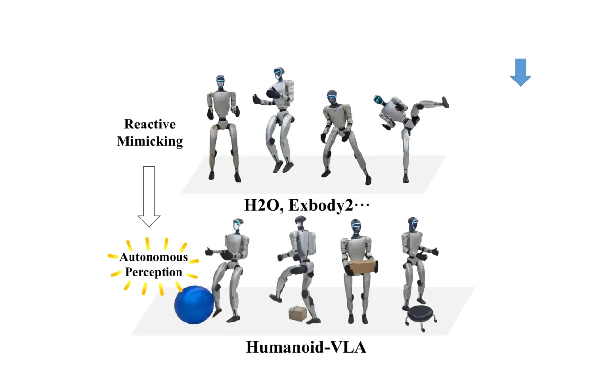
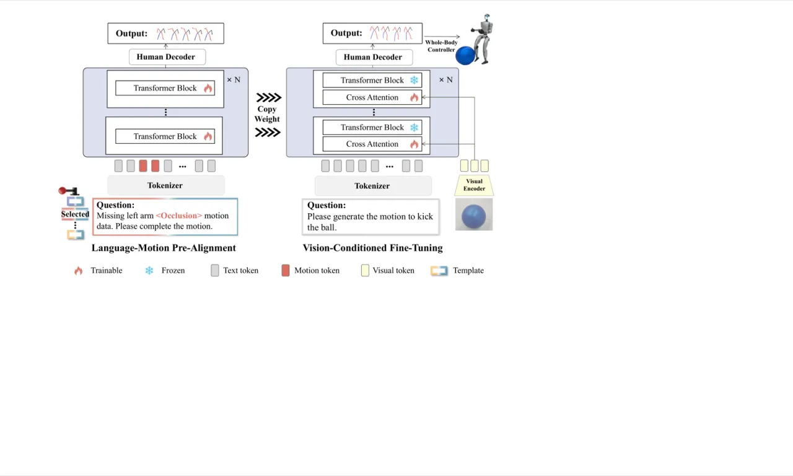
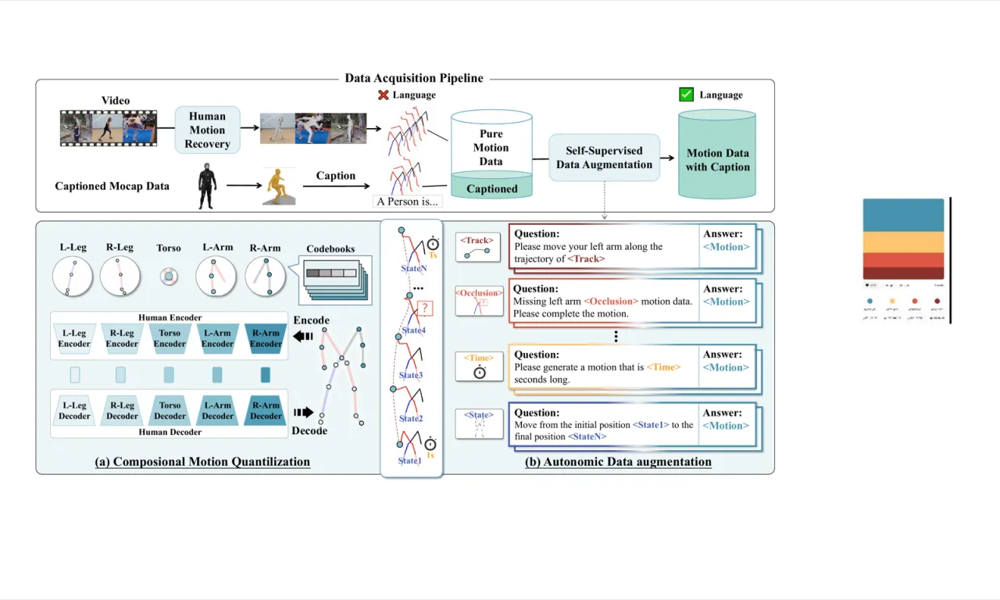
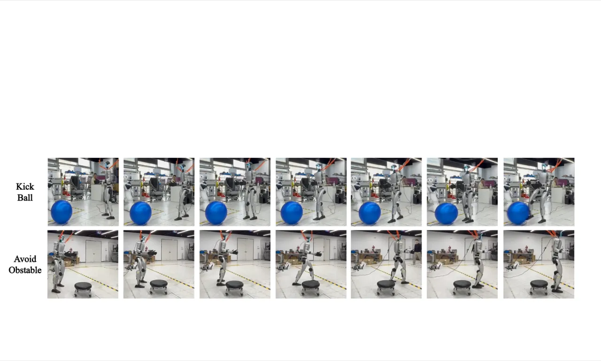

Humanoid-VLA 是首个面向人形机器人的 VLA（Vision-Language-Action）框架，将语言理解、第一人称（egocentric）视觉感知与全身运动控制统一于单一系统中。针对现有方法依赖反应式机制、缺乏自主感知能力以及标注数据稀缺等问题，该框架通过语言-动作预对齐与视觉条件微调两阶段训练，并引入自监督数据增强策略，有效利用大规模无标注视频数据，使人形机器人能够在真实场景中完成物体交互与环境探索任务。
当前人形机器人控制框架主要依赖反应式机制——跟踪人体演示或响应语言命令，但无法自主感知环境、识别交互目标。这一根本局限使机器人在需要物体操作或复杂环境探索的场景中举步维艰。同时，数据稀缺是另一瓶颈：现有动作捕捉数据集缺乏同步的第一人称视觉信息，遥操作采集成本极高，导致训练数据在数量和多样性上均严重不足。
"Current data acquisition methods, focusing mainly on human joint poses, lack integration with egocentric vision. Thus, they can only teach robots what actions are performed, not the underlying intent or context."

Humanoid-VLA 由三个主要模块构成：语言-动作预对齐（Language-Motion Pre-Alignment）、视觉条件微调（Vision-Conditioned Fine-Tuning），以及集成已有工作的全身控制器（Whole-Body Controller）。整体以 Llama3-70B 为基座 LLM，将运动码本与语言词汇表统一为共享词表，实现运动 token 与文本 token 的无缝融合。

模型将每帧身体姿态分解为五个部位（左腿、右腿、躯干、左臂、右臂），为每个部位独立训练编码器 $\mathcal{E}_b$ 和码本 $V_b$，将部位数据 $c_t$ 压缩为离散表示 $\hat{z}_t \in \mathbb{R}^5$。优化目标 $\mathcal{L}_{hvq}$ 结合了重建损失、嵌入损失和承诺损失。这种分解式编码的核心优势在于：可在 token 级别对特定身体部位进行替换、扰动或重排，为后续自监督数据增强奠定灵活的操作基础。

框架设计了四类增强任务：
训练分两阶段：首先使用从视频提取的大规模低质量数据建立初步语言-动作对齐；随后用小规模高质量 Mocap 数据进行精调，确保动作符合正确的人体运动学规律。
冻结预对齐阶段的 transformer 层权重，引入视觉编码器。在解码器每一层插入 cross-attention 模块，以语言 token $X_d^l$ 为 query，视觉 token $X_v^l$ 为 key 和 value，融合得到统一表示 $X_u^l$：
$X_u^l = \text{Softmax}\!\left(\frac{Q_l K_l^T}{\sqrt{D}}\right) V_l$，其中 $Q_l = X_d^l W_Q^l$，$K_l = V_l = X_v^l W_{K/V}^l$。
仅训练新引入的 cross-attention 参数，实现参数高效的视觉融合，将学到的运动知识迁移到视觉引导的真实场景中。
集成目标条件强化学习策略（RL policy），将 VLA 生成的运动序列映射为人形机器人的关节力矩 $j_t \in \mathbb{R}^{24}$，使用 PPO（Proximal Policy Optimization）在 IsaacGym 物理仿真器中训练，实现端到端的物理可行运动执行。
实验从两个维度评估 Humanoid-VLA：（1）运动生成质量（运动学保真度 + 物理合理性）；（2）视觉集成效果（在 Unitree G1 真实机器人上的任务成功率）。基线模型包括 MDM（扩散式）和 T2M-GPT（自回归式），使用 HumanML3D 和自建 Humanoid-S 数据集评估。
使用 FID（分布相似度）和 Diversity（生成多样性，200 个随机运动的平均欧氏距离）作为评估指标。
| 方法 | HumanML3D FID↓ | HumanML3D DIV↑ | Humanoid-S FID↓ | Humanoid-S DIV↑ |
|---|---|---|---|---|
| MDM | 0.889±.026 | 3.855±.053 | 2.351±.590 | 4.111±.261 |
| T2M-GPT | 0.531±.020 | 4.555±.058 | 1.101±.189 | 4.199±.218 |
| Humanoid-VLA | 0.467±.018 | 4.585±.086 | 1.037±.147 | 4.466±.213 |
在 HumanML3D 上，Humanoid-VLA 的 FID 为 0.467，相比 MDM 提升 47.5%，相比 T2M-GPT 提升 12%；在 Humanoid-S 上 Diversity 达到 4.466，超越 MDM 6%。
在 IsaacGym 中追踪模型生成的运动学轨迹，评估全局 MPJPE（$E_\text{mpjpe}^g$，mm）、PA-MPJPE（$E_\text{mpjpe}^\text{pa}$，mm）、加速度误差（$E_\text{accel}$，mm/s²）和速度误差（$E_\text{vel}$，mm/s）：
| 条件难度 | 输入条件 | $E_\text{mpjpe}^g$↓ | $E_\text{mpjpe}^\text{pa}$↓ | $E_\text{accel}$↓ | $E_\text{vel}$↓ |
|---|---|---|---|---|---|
| Easy | D（文本描述） | 36.13 | 1.53 | 34.42 | 18.73 |
| Medium | D + T（描述+时长） | 31.07 | 1.18 | 27.84 | 14.76 |
| Hard | D + $S_1$ + $S_N$（描述+始末状态） | 37.14 | 1.34 | 34.69 | 18.08 |
RL 策略在中等难度下（D+T 条件）达到最优追踪精度：全局位置误差 $E_\text{mpjpe}^g$ 为 31.07 mm，姿态精度误差 $E_\text{mpjpe}^\text{pa}$ 仅 1.18 mm，体现平滑且物理一致的运动生成能力。

在 Unitree G1 机器人上评估 4 大类、8 项代表性任务，每项任务重复测试 10 次：
| 任务 | 成功率（SR） |
|---|---|
| Turn to an object（转向物体） | 10/10 |
| Hold an object（抓握物体） | 9/10 |
| Wave to people（向人挥手） | 10/10 |
| Avoid an obstacle（绕障碍） | 9/10 |
| Jump over an object（跨越障碍） | 9/10 |
| Dance with a partner（与人共舞） | 8/10 |
| Punch an obstacle（击打障碍） | 10/10 |
| Kick a ball（踢球） | 9/10 |
在数据增强的消融实验中，仅使用低质量视频数据训练时 FID 为 0.698；仅使用高质量 Mocap 数据时 FID 为 0.557；结合两者后 FID 降至 0.467，代表 16% 的改善。 这有力验证了将大规模视频运动数据纳入训练的重要性，以及自监督数据增强策略的有效性。
论文结论明确指出："In the future, we aim to enhance the success rate of humanoid robots in performing more complex loco-manipulation tasks."——说明当前框架在精细运动操作（loco-manipulation）任务上仍存在不足，尤其在涉及手部精细控制的场景中。
视觉感知模块仅使用 RGB 摄像头采集第一人称图像，缺乏深度信息。对于需要精确三维定位的交互任务（如精确抓握），单目视觉可能引入定位误差，限制了交互精度。
从视频中提取的低质量运动数据（human motion recovery）精度不足，而高质量 Mocap 数据规模有限。尽管两阶段训练策略有效缓解了这一矛盾，但数据质量的根本瓶颈仍制约着模型在极细粒度运动任务上的表现。
视觉条件微调阶段依赖采集到的真实场景运动捕捉数据（与第一人称视觉同步），而遥操作采集成本高、规模有限，可能制约视觉感知能力在更广泛任务分布上的泛化性。